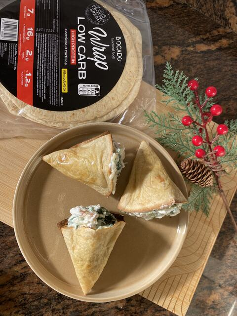

Receta · Almuerzo · 25 min aprox.
Conos de Espinaca y Ricotta
Prepara conos de Espinaca y Ricotta con Wrap Low Carb: una receta fácil que tendrás lista en unos 25 minutos. Lleva 200g de ricotta, 3 manojos de espinaca fresca y bacon, y es perfecta para un almuerzo, una cena ligera o para llevar. Wrap Low Carb aporta 22 g de proteína por cada 100 g.
6 ingredientes5 pasos25 min aprox.
 Hecha conWrap Low Carb320 g · 8 tortillas de 40 gVer producto
Hecha conWrap Low Carb320 g · 8 tortillas de 40 gVer productoIngredientes
- 3 Protein Wraps (en mitades)
- 200g de ricotta
- 3 manojos de espinaca fresca
- Bacon
- Queso mozzarella rallado
- Sal, aceite y pimienta
Información nutricionalEntrante para compartir en familia
Preparación
- 01Montar conos con las mitades de wrap, sujetando con un palillo
- 02Hornear 10 minutos con un poco de aceite hasta dorar
- 03Saltear las espinacas con el bacon
- 04Mezclar con la ricotta, sal, pimienta y mozzarella
- 05Rellenar los conos con la mezcla